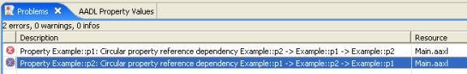

Previous
Next
Previous
Next 
| 9.1 Additional Semantic Checks |
Two AADL semantic checks are provided as stand-alone analysis plug-ins instead of being
performed as part of the AADL build process.
| 9.1.1 Check for Circular Property References |
This analysis checks that there are no circular dependencies among property references and is
available as “Analyses > Semantic Checks > Check for Circular Property References” in the
menu bar and as the button on the toolbar. This analysis may be invoked only on AADL
Specification objects and will not be enabled if no such object is selected. This analysis can be
time consuming on large models because it looks up every property value on every object that
can have properties.
All property association that are involved in circular references are marked with errors. For
example, the following component type creates a circular reference among the properties
Example::p1 and Example::p2:
system s
properties
Example::p1 => value(Example::p2);
Example::p2 => value(Example::p1);
end s;
Running the check on the above specification creates the markers shown in Figure 26.

Figure 26: Example output of the Circular Property Reference Check.
| 9.1.2 Check for Required Connection |
The Required_Connection property is a predeclared aadlboolean property for
ports. It is
true if a port must always be connected. This means that a component implementation must
have a connection from/to this port and a subcomponent port for every mode. Similarly, a
subcomponent with a component classifier, whose port has this property set to true must have
that port connected within the enclosing component implementation for every mode.
This analysis can be invoked on any AADL specification or system instance as “Analyses >
Semantic Checks > Check for Required Connection” in the menu bar or the button in the
toolbar. Any subcomponent port that requires a connection but does not have an incoming or
outgoing connection is reported. Any component implementation port that requires a
connection but does not have an incoming or outgoing connection is reported if the
implementation contains subcomponents. The results are reported as warning markers that can
be viewed in the “Problems” view.
Note: The default setting for this property is currently true. This means unless the value
is explicitly set to false the check will be performed and violations reported.